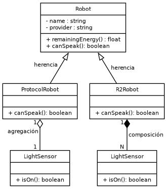

Created: 2025-04-08 mar 23:51
Una clase puede heredar de otra de forma publica, privada y/o protegida.
class Derived : public Base {};
class Derived : private Base {};
class Derived : protected Base {};
| Visibilidad en Base | Herencia public | Herencia protected | Herencia private |
|---|---|---|---|
| public | public | protected | private |
| protected | protected | protected | private |
| private | no accesible | no accesible | no accesible |
En C++ basta con separar por comas las clases base de las que heredamos:
class Derived : public Base1, protected Base2, private Base3 {};
Para resolverlo podemos (en ocasiones) transformar ciertas clases en interfaces, o emplear la herencia virtual:
class Storable {...};
class Transmitter: public virtual Storable {...};
class Receiver: public virtual Storable {...};
class Radio: public Transmitter, public Receiver {...};
quedar como se hereda:
class B : {
public:
virtual void m () {...}
};
class D : public B {...};
D d;
d.m(); // B::m
reescribir completamente:
class B : {
public:
virtual void m () {...}
};
class D : public B {
public:
void m () { ... };
// C++11 admite override, p.e.
void m () { ... } override;
...
};
D d;
d.m(); // D::m
refinar:
class B : {
public:
virtual void m () {...}
};
class D : public B {
public:
void m () {
...;
B::m (); // Heredado
...;
};
...
};
D d;
d.m(); // D::m
C++11 en adelante podemos pedir explícitamente que cree o
se elimine el constructor por defecto.La forma de invocar un constructor de una clase base desde uno de una clase derivada es:
class B : {
public:
B (int b) {...}
};
class D : public B {
public:
D (int n, char c) : B(n), _c(c) , ac(n) { ... }; // Fase de iniciacion.
private:
char _c;
AnotherClass ac;
};
virtual ~T(). Piensa por qué puede ser apropiado
hacerlo.class A {
public:
~A() { std::cout << "Destructor de A\n"; }
};
int main() {
A a;
a.~A(); // Invocación manual
//Al terminar el ámbito, se vuelve a invocar.
}
El objeto contenedor es dueño del ámbito de vida del objeto contenido:
class Robot {
...
Robot () : mySensor ("temp-sensor") {} // Fase de iniciación
private:
Sensor mySensor; // 'mySensor' es un Objeto completo
};
Robot* r2d2 = new Robot; // Creamos a r2d2
...
delete r2d2; // 'mySensor' desaparece con r2d2
El objeto contenedor sólo tiene una referencia al objeto contenido, no controla su ámbito de vida:
class Robot {
public:
Robot () { aSensor = nullptr; }
void setSensor (Sensor* s) { aSensor = s; }
...
private:
Sensor* aSensor; // 'aSensor' es una referencia
};
Robot* c3po = new Robot;
Sensor lightSensor;
c3po.setSensor (&lightSensor);
...
delete c3po;
...
{
Robot anotherRobot;
anotherRobot.setSensor (&lightSensor);
...
}
if (lightSensor.isLightOn()) ...
variables globales:
TempSensor aTempSensor;
...
class Robot {
void doSomeThing () {
float temp = aTempSensor.readTemp();
}
}
variables locales:
class Robot {
void doSomeThing () {
TempSensor aTempSensor;
float temp = aTempSensor.readTemp();
}
}
parámetros de un método:
class Robot {
void doSomeThing (TempSensor aTempSensor) {
float temp = aTempSensor.readTemp();
}
}
switch en base a un campo tipo.class Shape { | class Circle : public Shape {
public: | public:
virtual float area () = 0; | virtual float area () {...}
virtual void draw () = 0; | virtual void draw () {}
... | ...
} | }
class Rectangle : public Shape { | class Triangle : public Shape {
public: | public:
virtual float area () {...} | virtual float area () {...}
virtual void draw () {} | virtual void draw () {}
... | ...
} | }
...
Shape* aos[MAXSHAPES];
for (int i = 0; i < MAXSHAPES; i++) {
int st = rand(1..4); // numero aleatorio: 1=circulo,
// 2=rectangulo, 3=triangulo
if (st == 1) aos[i] = new Circle;
if (st == 2) aos[i] = new Rectangle;
if (st == 3) aos[i] = new Triangle;
}
...
for (int i = 0; i < MAXSHAPES; i++) aos[i]->draw(); // No switch was harmed here!
Principio definido por Bárbara Liskov en 1994.
Dados dos tipos S y T, si S es un subtipo de T (p.e. por herencia) entonces en un programa que haga uso de ambos, cualquier objeto de tipo T puede ser sustituído por uno de tipo S sin que se vean alteradas ningunas de las propiedades deseables del programa, tales como corrección, cometido, etc…
virtual. De lo contrario el
enlace por defecto de métodos en C++ es estático (tiempo de
compilación), esto es así por razones de eficiencia del código en
tiempo de ejecución.Para que en C++ un método tenga enlace dinámico tenemos que tener en cuenta lo siguiente:
virtual, y
además…class Shape {
public:
Shape () { std::cout << "Shape const.\n";}
virtual ~Shape () { std::cout << "Shape Dest.\n";}
virtual Shape* clone () = 0; // Fíjate en la clase derivada...
};
class Line : public Shape {
public:
Line () { std::cout << "Line const.\n";}
~Line () { std::cout << "Line Dest.\n";}
Line* clone () { return new Line; } // Line deriva de Shape!
};
No, no lo es. Lo podemos ver en el ejemplo anterior.
El método Line::clone() no lo tiene. El compilador ya lo sabe.
C++11 introduce el modificador override (opcional)
y nos permite detectar errores de compilación
relacionados con el enlace dinámico:
class A {
public:
virtual void foo(); // Enlace dinámico
void bar();
};
class B : public A {
public:
void foo() const override; // Error: B::foo does not override A::foo
// (signature mismatch)
void foo() override; // OK: B::foo overrides A::foo
void bar() override; // Error: A::bar is not virtual
};
virtual…En estos otros LOO tenemos que indicar explícitamente que queremos que un método tenga enlace estático para no incurrir en la penalización que ya conocemos respecto a la doble indirección.
Casi todos ellos suelen emplear el modificador final:
// Java
class Shape {
public Shape () {...}
public final void store () {...} // enlace estático
}
Shape.store() no puede ser redefinido
en clases derivadas.Símplemente dice que una función virtual no puede ser redefinida en una clase derivada o que no podemos derivar de una clase, mira:
class A {
virtual void foo() final; // A::foo is final
void bar() final; // Error: non-virtual
// function cannot be final
};
class B final : A { // B is final
void foo(); // Error: foo cannot be overridden
// as it's final in A
};
class C : B { // Error: B is final
};

Figura 1: Herencia, composición y agregación.